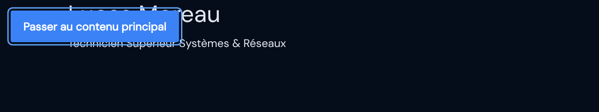

MDN — la référence CSS
- Rôle
- Une page par propriété, sélecteur et valeur CSS, en français.
- Documentation
- MDN — CSS
- Lignes concernées
- Toutes les lignes 29 à 133.
Série « Portfolio TSSR » · 20 épisodes
Objectif de l'épisode
Écrire le socle graphique de tout le portfolio :
les variables de couleurs, de polices, d'arrondis et d'ombres, un thème clair déjà prêt,
la remise à zéro des marges, la barre de défilement, un lien d'accessibilité pour le clavier et le contour du focus.
À l'écran, la page passe au bleu nuit, avec un texte gris clair dans la police DM Sans.
<style>
:root {
--clr-bg: #060d1a;
…
}
</style>Partie 2
À la fin de cet épisode, vous serez capable de construire le système de design d'un site : un ensemble de variables CSS qui pilote toutes les couleurs de la page, avec un thème sombre et un thème clair.
<head>, au bon endroit par rapport aux bibliothèques.var().<html>.#060d1a) et une couleur avec opacité (rgba(…)).Les mots de l'épisode 1 (balise, attribut, CDN…) sont dans la liste de l'épisode 1. Voici les nouveaux.
{ } qui contiennent des déclarations. body { color: red; }.body vise la balise <body>, .skip-link une classe, #read-progress un identifiant.propriété: valeur;. Le deux-points sépare, le point-virgule termine.color (couleur du texte), background-color (couleur du fond), font-size (taille du texte)…--clr-bg. On la déclare une fois et on la réutilise partout. Son nom officiel : propriété personnalisée.var()var(--clr-bg).: qui vise un élément selon son état ou sa position : :root, :hover (survol), :focus (actif au clavier).:: : ::selection (texte sélectionné), ::before, ::after.# suivi de 6 caractères : 2 pour le rouge, 2 pour le vert, 2 pour le bleu, de 00 à ff.rgba()rgba(255,255,255,.04) = blanc à 4 %.px et remrem est relatif à la taille du texte de <html> (ici 16 pixels).#) pèse plus qu'une classe (.), qui pèse plus qu'une balise. Le sélecteur universel * ne pèse rien.-webkit-Partie 3
Cochez chaque case quand l'étape est faite. Vos cases cochées sont mémorisées sur l'ordinateur.
Cet épisode ne crée aucun nouveau fichier : tout le CSS est écrit dans index.html, comme dans le portfolio final. config.js, images/ et ressources/ restent identiques.
portfolio-tssr/
├── index.html ← modifié dans cet épisode
├── config.js (inchangé)
├── images/ (inchangé)
└── ressources/ (inchangé)Partie 4 · par rapport à l'épisode 1
L'épisode 2 ne modifie aucune ligne de l'épisode 1.
Il ajoute deux blocs, à deux endroits précis.
<!DOCTYPE html> jusqu'à la ligne <title>…</title> incluse.<style> … </style> (105 lignes) : juste après la ligne <title> (ligne 28) et juste avant </head> (ligne 29) de l'épisode 1.</head>, la ligne vide, <body>.<body> (ligne 31) et juste avant <main id="main-content"> (ligne 32) de l'épisode 1.<main> jusqu'à </html>.Résultat : le fichier passe de 39 à 145 lignes.
Les numéros de ligne cités dans cet épisode sont ceux du nouveau fichier.
Les lignes précédées de + sont à ajouter ; les autres existent déjà.
Zone 1 — fin du <head>
<title>Portfolio TSSR | … · MODE 83 Draguignan</title>
<style>
:root {
… (tout le CSS de l'épisode)
::selection { … }
</style>
</head>Zone 2 — début du <body>
<body>
<a href="#main-content" class="skip-link">Passer au contenu principal</a>
<main id="main-content">Pourquoi la feuille de style va après Bootstrap et pas avant
Bootstrap (ligne 16) contient lui aussi une règle body qui met un fond blanc.
Quand deux règles de même poids se contredisent, la dernière lue gagne.
En plaçant notre <style> à la fin du <head>, après Bootstrap, nos couleurs l'emportent.
Placé avant, notre fond bleu nuit serait écrasé par le blanc de Bootstrap.
Pourquoi le lien d'évitement va juste après <body>
Il doit être le tout premier élément atteint avec la touche Tab.
Placé plus bas, il perdrait son intérêt : on aurait déjà parcouru ce qu'il permet d'éviter.
Si votre fichier de l'épisode 1 est identique au code de référence, vous pouvez copier uniquement les nouveautés :
Partie 5
Les règles pour reconnaître une source officielle restent celles de l'épisode 1.
Pour le CSS, la référence principale est MDN, rubrique CSS. Les liens marqués s'ouvrent dans un nouvel onglet.
Comment chercher une propriété CSS
--nom, var() et l'héritage des variables.var(.:root, [data-theme="light"], *, et pourquoi une règle en écrase une autre.#060d1a et rgba(255,255,255,.04).rgba() est un alias de rgb() : les deux écritures sont équivalentes.::-webkit-scrollbar fonctionnent dans Chrome, Edge et Safari, pas dans Firefox.Partie 6
Même cycle qu'à l'épisode 1 : écrire, enregistrer (Ctrl+S), actualiser (F5),
observer, comprendre. Toutes les étapes 2 à 11 s'écrivent à l'intérieur du bloc <style>, dans l'ordre.
L'indentation dans le CSS
Le bloc <style> est décalé de 2 espaces (il est dans <head>), les règles de 4 espaces et les déclarations de 6 espaces.
VS Code vous aide : après une accolade { et Entrée, il décale la ligne suivante tout seul.
<title>Écrivez ces deux lignes entre la ligne <title> et </head> (voir la partie 4) :
<style>
</style>Vous voyez : rien ne change, c'est normal : la feuille de style est vide. Vérifiez seulement qu'aucun texte « <style> » ne s'affiche dans la page.
Écrivez la règle :root et ses 29 variables entre <style> et </style> (lignes 30 à 60 du code complet). Pour aller vite et sans faute, copiez-les depuis la partie 8.
:root {
--clr-bg: #060d1a;
--clr-bg2: #0b1628;
…
--fz-min: 1.05rem;
}Vous voyez : toujours rien ! Les variables sont déclarées, mais aucune règle ne les utilise encore. C'est comme remplir une palette de peinture sans toucher la toile. Pour les voir : F12 › Éléments › cliquez sur <html> : le panneau Styles liste vos variables.
Écrivez le bloc [data-theme="light"] et ses 17 variables (lignes 62 à 80).
[data-theme="light"] {
--clr-bg: #f0f4fa;
…
}Vous voyez : rien, car la balise <html> porte data-theme="dark" : cette règle ne s'applique pas. Vous la testerez à l'étape 6, une fois les couleurs branchées sur la page.
html *, *::before, *::after { box-sizing: border-box; margin: 0; padding: 0; }
html { scroll-behavior: smooth; font-size: 16px; }Vous voyez : presque rien, et c'est normal : Bootstrap avait déjà fait sa propre remise à zéro, et ses règles pour h1 et p, plus précises que *, gardent leurs marges. Le reset prépare les éléments des prochains épisodes.
body : le grand changement body {
font-family: var(--font-body);
background-color: var(--clr-bg);
color: var(--clr-text);
font-size: var(--fz-min);
line-height: 1.7;
overflow-x: hidden;
transition: background-color var(--trans), color var(--trans);
}Vous voyez : la page passe au bleu nuit, le texte devient gris clair et prend la police DM Sans. Les variables de l'étape 2 sont enfin utilisées grâce à var().
Modifiez provisoirement la ligne 2 : remplacez data-theme="dark" par data-theme="light". Enregistrez, actualisez.
Vous voyez : la page passe en gris bleuté clair avec un texte ardoise foncé, sans qu'une seule règle CSS ait changé : seules les valeurs des variables ont été remplacées. Remettez ensuite data-theme="dark" : c'est la valeur du fichier de référence. Le bouton qui fera ce changement tout seul arrive à l'épisode 3.
::-webkit-scrollbar { width: 7px; }
::-webkit-scrollbar-track { background: var(--clr-bg2); }
::-webkit-scrollbar-thumb {
background: linear-gradient(180deg, var(--clr-accent), var(--clr-teal));
border-radius: 10px; height: 120px;
}
::-webkit-scrollbar-thumb:hover {
background: linear-gradient(180deg, var(--clr-accent2), var(--clr-cyan));
box-shadow: 0 0 8px var(--clr-accent);
}Pour l'observer : la page est trop courte pour défiler, donc aucune barre n'apparaît. Ajoutez provisoirement style="height:200vh" dans la balise <main> : une fine barre bleue apparaît à droite (dans Chrome ou Edge ; Firefox garde sa barre habituelle). Puis retirez cet attribut.
Dans le <style>, écrivez les lignes 107 à 120 (copiez-les depuis la partie 8). Puis, dans le <body>, juste après <body> :
<a href="#main-content" class="skip-link">Passer au contenu principal</a>Vous voyez : rien… jusqu'à ce que vous cliquiez dans la page puis appuyiez sur Tab : un bouton bleu « Passer au contenu principal » glisse en haut à gauche. Appuyez sur Entrée : l'adresse de la page se termine par #main-content.
#read-progress {
position: fixed; top: 0; left: 0;
height: 3px; width: 0%;
…
}Vous voyez : rien, et c'est prévu : l'élément #read-progress n'existe pas encore dans la page. Son HTML et son JavaScript arriveront à l'épisode 13.
:focus-visible { outline: 2px solid var(--clr-accent2); outline-offset: 3px; border-radius: 3px; }
::selection { background: rgba(59,130,246,.3); color: var(--clr-heading); }Vous voyez : sélectionnez le métier à la souris : il se surligne en bleu. Appuyez sur Tab : le lien d'évitement est entouré d'un contour bleu clair.
Faites : clic droit › Mettre en forme le document, puis comparez votre fichier avec le code complet de la partie 8 (le bouton « Surligner les ajouts » montre les nouvelles lignes).
Vous avez terminé quand votre fichier fait 145 lignes, identiques au code de référence, et que data-theme vaut bien dark.
Partie 7 · la plus importante
Chaque fiche répond aux quatre questions Quoi ?, Pourquoi ?, Comment ? et Où ?.
Les numéros sont ceux du nouveau fichier de 145 lignes.
Lire une règle CSS
body {
color: var(--clr-text);
}body est le sélecteur (qui ?), color la propriété (quoi ?), var(--clr-text) la valeur (comment ?).
Le : sépare propriété et valeur ; le ; termine la déclaration ; les accolades délimitent la règle.
Ces lignes sont identiques à l'épisode 1 ; seul leur numéro a changé. Le lien ouvre la fiche correspondante de l'épisode 1 (le dossier episode-1 doit être placé à côté du dossier episode-2).
| Ligne (épisode 2) | Code | Fiche de l'épisode 1 |
|---|---|---|
| 1 | <!DOCTYPE html> | Ligne 1 |
| 2 | <html lang="fr" data-theme="dark" dir="ltr"> | Ligne 2 |
| 3 | <head> | Ligne 3 |
| 4 | <meta charset="UTF-8" /> | Ligne 4 |
| 5 | <meta name="viewport" content="width=device-width, initia… | Ligne 5 |
| 6 | <meta name="description" content="Portfolio professionnel… | Ligne 6 |
| 7 | <meta name="keywords" content="TSSR, technicien systèmes … | Ligne 7 |
| 8 | <meta name="robots" content="index, follow" /> | Ligne 8 |
| 9 | <meta name="theme-color" content="#060d1a" /> | Ligne 9 |
| 10 | <meta name="author" content="Lucas Moreau" /> | Ligne 10 |
| 12 | <link rel="preconnect" href="https://fonts.googleapis.com… | Ligne 12 |
| 13 | <link rel="preconnect" href="https://fonts.gstatic.com" c… | Ligne 13 |
| 14 | <link href="https://fonts.googleapis.com/css2?family=Syne… | Ligne 14 |
| 16 | <link rel="stylesheet" href="https://cdn.jsdelivr.net/npm… | Ligne 16 |
| 17 | <link rel="stylesheet" href="https://cdnjs.cloudflare.com… | Ligne 17 |
| 18 | <link rel="stylesheet" href="https://cdnjs.cloudflare.com… | Ligne 18 |
| 20 | <script src="config.js"></script> | Ligne 20 |
| 21 | <script src="https://cdnjs.cloudflare.com/ajax/libs/pdf.j… | Ligne 21 |
| 23 | <link rel="icon" type="image/png" sizes="32x32" href="ima… | Ligne 23 |
| 24 | <link rel="icon" type="image/png" sizes="192x192" href="i… | Ligne 24 |
| 25 | <link rel="icon" type="image/webp" href="images/favicon-4… | Ligne 25 |
| 26 | <link rel="apple-touch-icon" sizes="180x180" href="images… | Ligne 26 |
| 28 | <title>Portfolio TSSR | Recherche d'emploi – Technicien S… | Ligne 28 |
| 134 | </head> | Ligne 29 |
| 136 | <body> | Ligne 31 |
| 138 | <main id="main-content"> | Ligne 32 |
| 139 | <div class="container"> | Ligne 33 |
| 140 | <h1>Lucas Moreau</h1> | Ligne 34 |
| 141 | <p>Technicien Supérieur Systèmes & Réseaux</p> | Ligne 35 |
| 142 | </div> | Ligne 36 |
| 143 | </main> | Ligne 37 |
| 144 | </body> | Ligne 38 |
| 145 | </html> | Ligne 39 |
Lignes vides (61, 81, 83, 85, 95, 106, 121, 130) : elles séparent les règles pour aérer le code, sans effet pour le navigateur.
<style>Elle ouvre une feuille de style interne : une zone, dans le <head>, où l'on écrit du CSS directement dans le fichier HTML.
Tout le design du portfolio va vivre ici. Le portfolio de la série tient en un seul fichier index.html (plus config.js) : pas de fichier .css séparé à gérer ni à oublier lors de la mise en ligne. Sa place est essentielle : elle est écrite après le lien vers Bootstrap (ligne 16). À importance égale, la règle CSS lue en dernier gagne : nos styles passent donc devant ceux de Bootstrap.
Le navigateur afficherait tout le CSS qui suit comme du texte brut en haut de la page, au lieu de l'appliquer.
<style></style>.{ } contenant des déclarations (quoi changer ?). Exemple : body { color: red; }.propriété: valeur;. Les deux-points séparent la propriété de sa valeur, le point-virgule termine la déclaration.Le CSS vient après Bootstrap : le dernier qui parle a raison (à importance égale).
:root {Elle ouvre une règle qui vise :root, c'est-à-dire la racine du document : la balise <html>.
On y déclare toutes nos variables CSS. Comme <html> contient toute la page et que les variables se transmettent aux éléments contenus (on dit qu'elles sont héritées), elles seront utilisables partout.
Les 29 variables du thème sombre (lignes 31 à 59) n'existeraient plus nulle part, ou le CSS serait cassé jusqu'à la prochaine accolade.
:root:) qui désigne la racine du document. Elle vise la même balise que le sélecteur html, mais avec un « poids » (une spécificité) plus élevé.{: qui vise un élément selon sa position ou son état (:root, :hover, :focus…).:root = les racines de l'arbre : tout ce qui pousse au-dessus en profite.
--clr-bg --clr-bg: #060d1a;Elle crée la variable --clr-bg et y range la valeur #060d1a : le bleu nuit presque noir, couleur de fond principale de la page.
Dans cet épisode, elle est utilisée ligne 88, grâce à var(--clr-bg). Déclarée une seule fois ici, elle pourra être changée partout en modifiant une seule ligne. En thème clair, elle est remplacée par une autre valeur, à la ligne 63.
Les lignes qui l'utilisent (88) perdraient leur valeur : la propriété concernée serait ignorée par le navigateur et reprendrait sa valeur par défaut.
--clr-bg:#060d1a;--clr-bg--. clr est l'abréviation de color, « couleur ».# suivi de trois paires de caractères : rouge, vert, bleu, de 00 (aucune lumière) à ff (lumière maximale).Le fond de la nuit : bg = background, le fond.
--clr-bg2 --clr-bg2: #0b1628;Elle crée la variable --clr-bg2 et y range la valeur #0b1628 : un second fond, un cran plus clair, pour différencier certaines zones.
Dans cet épisode, elle est utilisée ligne 97, grâce à var(--clr-bg2). Déclarée une seule fois ici, elle pourra être changée partout en modifiant une seule ligne. En thème clair, elle est remplacée par une autre valeur, à la ligne 64.
Les lignes qui l'utilisent (97) perdraient leur valeur : la propriété concernée serait ignorée par le navigateur et reprendrait sa valeur par défaut.
--clr-bg2:#0b1628;--clr-bg2--. clr est l'abréviation de color, « couleur ».# suivi de trois paires de caractères : rouge, vert, bleu, de 00 (aucune lumière) à ff (lumière maximale).bg2 : le « fond numéro 2 », juste un peu plus clair.
--clr-surface --clr-surface: rgba(255,255,255,.04);Elle crée la variable --clr-surface et y range la valeur rgba(255,255,255,.04) : une surface blanche à 4 % d'opacité, pour un effet de verre dépoli très discret sur les cartes.
Elle n'est pas encore utilisée dans cet épisode : elle servira plus tard pour les cartes des sections (compétences, projets…). On prépare toute la palette dès maintenant, pour que chaque section y puise ensuite. En thème clair, elle est remplacée par une autre valeur, à la ligne 65.
Rien de visible aujourd'hui. Mais dans les épisodes suivants, les règles qui l'utilisent ne trouveraient plus leur valeur et seraient ignorées.
--clr-surface:rgba(255,255,255,.04);--clr-surface--. clr est l'abréviation de color, « couleur »..04 veut dire 0,04, soit 4 % d'opacité.Surface = la vitre posée sur le fond.
--clr-surface2 --clr-surface2: rgba(255,255,255,.07);Elle crée la variable --clr-surface2 et y range la valeur rgba(255,255,255,.07) : la même surface un peu plus marquée (7 %), pour les survols.
Elle n'est pas encore utilisée dans cet épisode : elle servira plus tard pour les états de survol des cartes. On prépare toute la palette dès maintenant, pour que chaque section y puise ensuite. En thème clair, elle est remplacée par une autre valeur, à la ligne 66.
Rien de visible aujourd'hui. Mais dans les épisodes suivants, les règles qui l'utilisent ne trouveraient plus leur valeur et seraient ignorées.
--clr-surface2:rgba(255,255,255,.07);--clr-surface2--. clr est l'abréviation de color, « couleur »..04 veut dire 0,04, soit 4 % d'opacité.Surface 2 = la vitre qu'on éclaire en la survolant.
--clr-border --clr-border: rgba(96,165,250,.18);Elle crée la variable --clr-border et y range la valeur rgba(96,165,250,.18) : le bleu clair à 18 % d'opacité, couleur des bordures.
Elle n'est pas encore utilisée dans cet épisode : elle servira plus tard pour les bordures des cartes, des champs, de la barre de navigation. On prépare toute la palette dès maintenant, pour que chaque section y puise ensuite. En thème clair, elle est remplacée par une autre valeur, à la ligne 67.
Rien de visible aujourd'hui. Mais dans les épisodes suivants, les règles qui l'utilisent ne trouveraient plus leur valeur et seraient ignorées.
--clr-border:rgba(96,165,250,.18);--clr-border--. clr est l'abréviation de color, « couleur »..04 veut dire 0,04, soit 4 % d'opacité.border = la bordure, discrète mais présente.
--clr-accent --clr-accent: #3b82f6;Elle crée la variable --clr-accent et y range la valeur #3b82f6 : le bleu d'accent principal, celui des boutons et éléments importants.
Dans cet épisode, elle est utilisée lignes 99, 104, 110, 125, 128, grâce à var(--clr-accent). Déclarée une seule fois ici, elle pourra être changée partout en modifiant une seule ligne. En thème clair, elle est remplacée par une autre valeur, à la ligne 68.
Les lignes qui l'utilisent (99, 104, 110, 125, 128) perdraient leur valeur : la propriété concernée serait ignorée par le navigateur et reprendrait sa valeur par défaut.
--clr-accent:#3b82f6;--clr-accent--. clr est l'abréviation de color, « couleur ».# suivi de trois paires de caractères : rouge, vert, bleu, de 00 (aucune lumière) à ff (lumière maximale).L'accent, c'est la couleur qui « parle fort ».
--clr-accent2 --clr-accent2: #60a5fa;Elle crée la variable --clr-accent2 et y range la valeur #60a5fa : un deuxième bleu, plus lumineux, pour les survols et les mots mis en valeur.
Dans cet épisode, elle est utilisée lignes 103, 131, grâce à var(--clr-accent2). Déclarée une seule fois ici, elle pourra être changée partout en modifiant une seule ligne. En thème clair, elle est remplacée par une autre valeur, à la ligne 69.
Les lignes qui l'utilisent (103, 131) perdraient leur valeur : la propriété concernée serait ignorée par le navigateur et reprendrait sa valeur par défaut.
--clr-accent2:#60a5fa;--clr-accent2--. clr est l'abréviation de color, « couleur ».# suivi de trois paires de caractères : rouge, vert, bleu, de 00 (aucune lumière) à ff (lumière maximale).Accent 2 : le même bleu, en plus lumineux.
--clr-accent3 --clr-accent3: #93c5fd;Elle crée la variable --clr-accent3 et y range la valeur #93c5fd : un troisième bleu, très clair, pour de petites touches de lumière.
Elle n'est pas encore utilisée dans cet épisode : elle servira plus tard pour de petits détails lumineux dans les sections. On prépare toute la palette dès maintenant, pour que chaque section y puise ensuite. En thème clair, elle est remplacée par une autre valeur, à la ligne 70.
Rien de visible aujourd'hui. Mais dans les épisodes suivants, les règles qui l'utilisent ne trouveraient plus leur valeur et seraient ignorées.
--clr-accent3:#93c5fd;--clr-accent3--. clr est l'abréviation de color, « couleur ».# suivi de trois paires de caractères : rouge, vert, bleu, de 00 (aucune lumière) à ff (lumière maximale).Accent 3 : le bleu le plus pâle de la famille.
--clr-teal --clr-teal: #0ea5e9;Elle crée la variable --clr-teal et y range la valeur #0ea5e9 : un bleu « teal » (bleu-vert) pour les dégradés.
Dans cet épisode, elle est utilisée ligne 99, grâce à var(--clr-teal). Déclarée une seule fois ici, elle pourra être changée partout en modifiant une seule ligne. En thème clair, elle est remplacée par une autre valeur, à la ligne 71.
Les lignes qui l'utilisent (99) perdraient leur valeur : la propriété concernée serait ignorée par le navigateur et reprendrait sa valeur par défaut.
--clr-teal:#0ea5e9;--clr-teal--. clr est l'abréviation de color, « couleur ».# suivi de trois paires de caractères : rouge, vert, bleu, de 00 (aucune lumière) à ff (lumière maximale).Teal = sarcelle, un bleu qui tire vers le vert.
--clr-cyan --clr-cyan: #22d3ee;Elle crée la variable --clr-cyan et y range la valeur #22d3ee : un cyan électrique, la couleur « réseau » de la page, pour les lueurs et les dégradés.
Dans cet épisode, elle est utilisée lignes 103, 125, grâce à var(--clr-cyan). Déclarée une seule fois ici, elle pourra être changée partout en modifiant une seule ligne. En thème clair, elle est remplacée par une autre valeur, à la ligne 72.
Les lignes qui l'utilisent (103, 125) perdraient leur valeur : la propriété concernée serait ignorée par le navigateur et reprendrait sa valeur par défaut.
--clr-cyan:#22d3ee;--clr-cyan--. clr est l'abréviation de color, « couleur ».# suivi de trois paires de caractères : rouge, vert, bleu, de 00 (aucune lumière) à ff (lumière maximale).Cyan = la lumière d'un câble réseau.
--clr-text --clr-text: #e2e8f0;Elle crée la variable --clr-text et y range la valeur #e2e8f0 : le gris très clair du texte courant, plus doux pour les yeux qu'un blanc pur.
Dans cet épisode, elle est utilisée ligne 89, grâce à var(--clr-text). Déclarée une seule fois ici, elle pourra être changée partout en modifiant une seule ligne. En thème clair, elle est remplacée par une autre valeur, à la ligne 73.
Les lignes qui l'utilisent (89) perdraient leur valeur : la propriété concernée serait ignorée par le navigateur et reprendrait sa valeur par défaut.
--clr-text:#e2e8f0;--clr-text--. clr est l'abréviation de color, « couleur ».# suivi de trois paires de caractères : rouge, vert, bleu, de 00 (aucune lumière) à ff (lumière maximale).text = la couleur de tout ce qu'on lit.
--clr-text-soft --clr-text-soft: #94a3b8;Elle crée la variable --clr-text-soft et y range la valeur #94a3b8 : un texte secondaire, plus atténué, pour les descriptions.
Elle n'est pas encore utilisée dans cet épisode : elle servira plus tard pour les descriptions et textes secondaires. On prépare toute la palette dès maintenant, pour que chaque section y puise ensuite. En thème clair, elle est remplacée par une autre valeur, à la ligne 74.
Rien de visible aujourd'hui. Mais dans les épisodes suivants, les règles qui l'utilisent ne trouveraient plus leur valeur et seraient ignorées.
--clr-text-soft:#94a3b8;--clr-text-soft--. clr est l'abréviation de color, « couleur ».# suivi de trois paires de caractères : rouge, vert, bleu, de 00 (aucune lumière) à ff (lumière maximale).soft = doux, atténué.
--clr-text-faint --clr-text-faint: #475569;Elle crée la variable --clr-text-faint et y range la valeur #475569 : un texte très discret, pour les mentions annexes.
Elle n'est pas encore utilisée dans cet épisode : elle servira plus tard pour les mentions annexes. On prépare toute la palette dès maintenant, pour que chaque section y puise ensuite. En thème clair, elle est remplacée par une autre valeur, à la ligne 75.
Rien de visible aujourd'hui. Mais dans les épisodes suivants, les règles qui l'utilisent ne trouveraient plus leur valeur et seraient ignorées.
--clr-text-faint:#475569;--clr-text-faint--. clr est l'abréviation de color, « couleur ».# suivi de trois paires de caractères : rouge, vert, bleu, de 00 (aucune lumière) à ff (lumière maximale).faint = faible, à peine visible.
--clr-heading --clr-heading: #f0f6ff;Elle crée la variable --clr-heading et y range la valeur #f0f6ff : un blanc légèrement bleuté pour les titres.
Dans cet épisode, elle est utilisée ligne 132, grâce à var(--clr-heading). Déclarée une seule fois ici, elle pourra être changée partout en modifiant une seule ligne. En thème clair, elle est remplacée par une autre valeur, à la ligne 76.
Les lignes qui l'utilisent (132) perdraient leur valeur : la propriété concernée serait ignorée par le navigateur et reprendrait sa valeur par défaut.
--clr-heading:#f0f6ff;--clr-heading--. clr est l'abréviation de color, « couleur ».# suivi de trois paires de caractères : rouge, vert, bleu, de 00 (aucune lumière) à ff (lumière maximale).heading = titre.
--clr-white --clr-white: #ffffff;Elle crée la variable --clr-white et y range la valeur #ffffff : un blanc pur, pour le texte posé sur les boutons bleus.
Dans cet épisode, elle est utilisée ligne 111, grâce à var(--clr-white). Déclarée une seule fois ici, elle pourra être changée partout en modifiant une seule ligne. En thème clair, elle est remplacée par une autre valeur, à la ligne 77.
Les lignes qui l'utilisent (111) perdraient leur valeur : la propriété concernée serait ignorée par le navigateur et reprendrait sa valeur par défaut.
--clr-white:#ffffff;--clr-white--. clr est l'abréviation de color, « couleur ».# suivi de trois paires de caractères : rouge, vert, bleu, de 00 (aucune lumière) à ff (lumière maximale).white = blanc, tout simplement.
--clr-danger --clr-danger: #f87171;Elle crée la variable --clr-danger et y range la valeur #f87171 : un rouge doux pour les erreurs.
Elle n'est pas encore utilisée dans cet épisode : elle servira plus tard pour les messages d'erreur du formulaire de contact. On prépare toute la palette dès maintenant, pour que chaque section y puise ensuite. Elle n'est pas redéfinie dans le thème clair : elle garde la même valeur dans les deux thèmes.
Rien de visible aujourd'hui. Mais dans les épisodes suivants, les règles qui l'utilisent ne trouveraient plus leur valeur et seraient ignorées.
--clr-danger:#f87171;--clr-danger--. clr est l'abréviation de color, « couleur ».# suivi de trois paires de caractères : rouge, vert, bleu, de 00 (aucune lumière) à ff (lumière maximale).danger = rouge = attention, erreur.
--clr-success --clr-success: #34d399;Elle crée la variable --clr-success et y range la valeur #34d399 : un vert émeraude pour les succès et le badge « disponible ».
Elle n'est pas encore utilisée dans cet épisode : elle servira plus tard pour le badge « Disponible » et les messages de réussite. On prépare toute la palette dès maintenant, pour que chaque section y puise ensuite. Elle n'est pas redéfinie dans le thème clair : elle garde la même valeur dans les deux thèmes.
Rien de visible aujourd'hui. Mais dans les épisodes suivants, les règles qui l'utilisent ne trouveraient plus leur valeur et seraient ignorées.
--clr-success:#34d399;--clr-success--. clr est l'abréviation de color, « couleur ».# suivi de trois paires de caractères : rouge, vert, bleu, de 00 (aucune lumière) à ff (lumière maximale).success = vert = c'est réussi.
--clr-warn --clr-warn: #fbbf24;Elle crée la variable --clr-warn et y range la valeur #fbbf24 : un jaune ambré pour les avertissements.
Elle n'est pas encore utilisée dans cet épisode : elle servira plus tard pour les avertissements. On prépare toute la palette dès maintenant, pour que chaque section y puise ensuite. Elle n'est pas redéfinie dans le thème clair : elle garde la même valeur dans les deux thèmes.
Rien de visible aujourd'hui. Mais dans les épisodes suivants, les règles qui l'utilisent ne trouveraient plus leur valeur et seraient ignorées.
--clr-warn:#fbbf24;--clr-warn--. clr est l'abréviation de color, « couleur ».# suivi de trois paires de caractères : rouge, vert, bleu, de 00 (aucune lumière) à ff (lumière maximale).warn = warning, l'orange des feux de signalisation.
--radius-sm --radius-sm: 6px;Elle crée la variable --radius-sm et y range la valeur 6px : un petit arrondi de 6 pixels, pour les badges et petits éléments.
Elle n'est pas encore utilisée dans cet épisode : elle servira plus tard pour les badges. On prépare toute la palette dès maintenant, pour que chaque section y puise ensuite. Elle n'est pas redéfinie dans le thème clair : elle garde la même valeur dans les deux thèmes.
Rien de visible aujourd'hui. Mais dans les épisodes suivants, les règles qui l'utilisent ne trouveraient plus leur valeur et seraient ignorées.
--radius-sm:6px;--radius-sm--.pxsm = small, petit.
--radius-md --radius-md: 12px;Elle crée la variable --radius-md et y range la valeur 12px : un arrondi moyen de 12 pixels, pour les boutons et les champs.
Dans cet épisode, elle est utilisée ligne 113, grâce à var(--radius-md). Déclarée une seule fois ici, elle pourra être changée partout en modifiant une seule ligne. Elle n'est pas redéfinie dans le thème clair : elle garde la même valeur dans les deux thèmes.
Les lignes qui l'utilisent (113) perdraient leur valeur : la propriété concernée serait ignorée par le navigateur et reprendrait sa valeur par défaut.
--radius-md:12px;--radius-md--.pxmd = medium, moyen.
--radius-lg --radius-lg: 20px;Elle crée la variable --radius-lg et y range la valeur 20px : un grand arrondi de 20 pixels, pour les cartes.
Elle n'est pas encore utilisée dans cet épisode : elle servira plus tard pour les cartes. On prépare toute la palette dès maintenant, pour que chaque section y puise ensuite. Elle n'est pas redéfinie dans le thème clair : elle garde la même valeur dans les deux thèmes.
Rien de visible aujourd'hui. Mais dans les épisodes suivants, les règles qui l'utilisent ne trouveraient plus leur valeur et seraient ignorées.
--radius-lg:20px;--radius-lg--.pxlg = large, grand.
--radius-xl --radius-xl: 32px;Elle crée la variable --radius-xl et y range la valeur 32px : un très grand arrondi de 32 pixels, pour les grands blocs mis en avant.
Elle n'est pas encore utilisée dans cet épisode : elle servira plus tard pour les grands blocs mis en avant. On prépare toute la palette dès maintenant, pour que chaque section y puise ensuite. Elle n'est pas redéfinie dans le thème clair : elle garde la même valeur dans les deux thèmes.
Rien de visible aujourd'hui. Mais dans les épisodes suivants, les règles qui l'utilisent ne trouveraient plus leur valeur et seraient ignorées.
--radius-xl:32px;--radius-xl--.pxxl = extra large, comme les tailles de vêtements.
--shadow-glow --shadow-glow: 0 0 40px rgba(59,130,246,.25);Elle crée la variable --shadow-glow et y range la valeur 0 0 40px rgba(59,130,246,.25) : une lueur bleue diffuse autour d'un élément : l'effet « néon ».
Elle n'est pas encore utilisée dans cet épisode : elle servira plus tard pour les éléments mis en lumière. On prépare toute la palette dès maintenant, pour que chaque section y puise ensuite. En thème clair, elle est remplacée par une autre valeur, à la ligne 78.
Rien de visible aujourd'hui. Mais dans les épisodes suivants, les règles qui l'utilisent ne trouveraient plus leur valeur et seraient ignorées.
--shadow-glow:0 0 40px rgba(59,130,246,.25);--shadow-glow--.0 0 40px = pas de décalage, 40 pixels de flou : un halo tout autour.glow = lueur.
--shadow-card --shadow-card: 0 8px 32px rgba(0,0,0,.45);Elle crée la variable --shadow-card et y range la valeur 0 8px 32px rgba(0,0,0,.45) : une ombre portée sombre et profonde, pour détacher les cartes du fond.
Elle n'est pas encore utilisée dans cet épisode : elle servira plus tard pour les cartes. On prépare toute la palette dès maintenant, pour que chaque section y puise ensuite. En thème clair, elle est remplacée par une autre valeur, à la ligne 79.
Rien de visible aujourd'hui. Mais dans les épisodes suivants, les règles qui l'utilisent ne trouveraient plus leur valeur et seraient ignorées.
--shadow-card:0 8px 32px rgba(0,0,0,.45);--shadow-card--.0 0 40px = pas de décalage, 40 pixels de flou : un halo tout autour.card = carte : l'ombre qui la fait flotter.
--trans --trans: .3s cubic-bezier(.4,0,.2,1);Elle crée la variable --trans et y range la valeur .3s cubic-bezier(.4,0,.2,1) : une transition unique pour toute la page : 0,3 seconde avec une courbe d'accélération naturelle.
Dans cet épisode, elle est utilisée ligne 93, grâce à var(--trans). Déclarée une seule fois ici, elle pourra être changée partout en modifiant une seule ligne. Elle n'est pas redéfinie dans le thème clair : elle garde la même valeur dans les deux thèmes.
Les lignes qui l'utilisent (93) perdraient leur valeur : la propriété concernée serait ignorée par le navigateur et reprendrait sa valeur par défaut.
--trans:.3s cubic-bezier(.4,0,.2,1);--trans--..3ss = secondes).cubic-bezier(.4,0,.2,1)trans = transition : une seule vitesse pour toute la page.
--font-display --font-display: 'Syne', sans-serif;Elle crée la variable --font-display et y range la valeur 'Syne', sans-serif : la police des titres, Syne (chargée à l'épisode 1), avec une police de secours.
Elle n'est pas encore utilisée dans cet épisode : elle servira plus tard pour les grands titres. On prépare toute la palette dès maintenant, pour que chaque section y puise ensuite. Elle n'est pas redéfinie dans le thème clair : elle garde la même valeur dans les deux thèmes.
Rien de visible aujourd'hui. Mais dans les épisodes suivants, les règles qui l'utilisent ne trouveraient plus leur valeur et seraient ignorées.
--font-display:'Syne', sans-serif;--font-display--.sans-serif = sans empattements, monospace = largeur fixe) est utilisée si la police principale n'a pas pu être téléchargée.display = l'affiche : la police qui se voit de loin.
--font-mono --font-mono: 'IBM Plex Mono', monospace;Elle crée la variable --font-mono et y range la valeur 'IBM Plex Mono', monospace : la police « terminal », IBM Plex Mono.
Elle n'est pas encore utilisée dans cet épisode : elle servira plus tard pour tout ce qui évoque un terminal (menus, étiquettes). On prépare toute la palette dès maintenant, pour que chaque section y puise ensuite. Elle n'est pas redéfinie dans le thème clair : elle garde la même valeur dans les deux thèmes.
Rien de visible aujourd'hui. Mais dans les épisodes suivants, les règles qui l'utilisent ne trouveraient plus leur valeur et seraient ignorées.
--font-mono:'IBM Plex Mono', monospace;--font-mono--.sans-serif = sans empattements, monospace = largeur fixe) est utilisée si la police principale n'a pas pu être téléchargée.mono = monospace : toutes les lettres ont la même largeur, comme dans un terminal.
--font-body --font-body: 'DM Sans', sans-serif;Elle crée la variable --font-body et y range la valeur 'DM Sans', sans-serif : la police du texte courant, DM Sans.
Dans cet épisode, elle est utilisée ligne 87, grâce à var(--font-body). Déclarée une seule fois ici, elle pourra être changée partout en modifiant une seule ligne. Elle n'est pas redéfinie dans le thème clair : elle garde la même valeur dans les deux thèmes.
Les lignes qui l'utilisent (87) perdraient leur valeur : la propriété concernée serait ignorée par le navigateur et reprendrait sa valeur par défaut.
--font-body:'DM Sans', sans-serif;--font-body--.sans-serif = sans empattements, monospace = largeur fixe) est utilisée si la police principale n'a pas pu être téléchargée.body = le corps du texte.
--fz-min --fz-min: 1.05rem;Elle crée la variable --fz-min et y range la valeur 1.05rem : la taille minimale du texte, un peu au-dessus de 16 pixels (1,05 × 16 = 16,8 px).
Dans cet épisode, elle est utilisée lignes 90, 115, grâce à var(--fz-min). Déclarée une seule fois ici, elle pourra être changée partout en modifiant une seule ligne. Elle n'est pas redéfinie dans le thème clair : elle garde la même valeur dans les deux thèmes.
Les lignes qui l'utilisent (90, 115) perdraient leur valeur : la propriété concernée serait ignorée par le navigateur et reprendrait sa valeur par défaut.
--fz-min:1.05rem;--fz-min--.rem<html>. Ici 1rem = 16 pixels (ligne 84).fz = font size, taille de police ; min = minimale.
}Elle referme la règle :root ouverte ligne 30.
Elle marque la fin des 29 variables du thème sombre.
Le navigateur considérerait la suite du CSS comme faisant partie de la règle :root : les règles suivantes seraient mal lues.
}{ doit avoir la sienne.Une accolade ouverte = une accolade fermée, alignées l'une sous l'autre.
[data-theme="light"] {Elle ouvre une règle qui vise l'élément dont l'attribut data-theme vaut exactement light.
C'est ici que l'attribut data-theme posé à l'épisode 1 sur <html> prend son sens. Tant qu'il vaut dark, cette règle ne s'applique pas. S'il vaut light, les 17 variables suivantes remplacent celles du thème sombre. Les deux sélecteurs ont le même poids ; la règle écrite plus bas l'emporte. Le reste du CSS ne change jamais : seules les valeurs des variables changent.
Le thème clair n'existerait plus. Le bouton de changement de thème (épisode 3) ne changerait plus rien.
[data-theme="light"]= et la valeur recherchée, entre guillemets.{:root et [data-theme="light"] pèsent autant (une pseudo-classe = un attribut) : c'est donc l'ordre d'écriture qui décide.Même poids, dernier écrit : le thème clair, placé après, l'emporte quand il s'applique.
--clr-bg --clr-bg: #f0f4fa;Quand <html> porte data-theme="light", elle donne une nouvelle valeur à --clr-bg : #f0f4fa. Concrètement, le fond devient un gris bleuté très clair.
Les règles qui utilisent var(--clr-bg) n'ont pas besoin d'être réécrites : elles prennent automatiquement cette nouvelle valeur. En thème sombre, la valeur reste celle de la ligne 31 (#060d1a).
En thème clair, la variable garderait sa valeur du thème sombre (#060d1a).
--clr-bg:root : c'est ce qui permet le remplacement.#f0f4fa# suivi de trois paires de caractères : rouge, vert, bleu, de 00 (aucune lumière) à ff (lumière maximale).Même nom, autre valeur : c'est tout le secret du changement de thème.
--clr-bg2 --clr-bg2: #e2e8f0;Quand <html> porte data-theme="light", elle donne une nouvelle valeur à --clr-bg2 : #e2e8f0. Concrètement, le second fond devient un gris un peu plus soutenu.
Les règles qui utilisent var(--clr-bg2) n'ont pas besoin d'être réécrites : elles prennent automatiquement cette nouvelle valeur. En thème sombre, la valeur reste celle de la ligne 32 (#0b1628).
En thème clair, la variable garderait sa valeur du thème sombre (#0b1628).
--clr-bg2:root : c'est ce qui permet le remplacement.#e2e8f0# suivi de trois paires de caractères : rouge, vert, bleu, de 00 (aucune lumière) à ff (lumière maximale).Même nom, autre valeur : c'est tout le secret du changement de thème.
--clr-surface --clr-surface: rgba(255,255,255,.7);Quand <html> porte data-theme="light", elle donne une nouvelle valeur à --clr-surface : rgba(255,255,255,.7). Concrètement, les surfaces deviennent du blanc à 70 % : l'effet verre fonctionne aussi en clair.
Les règles qui utilisent var(--clr-surface) n'ont pas besoin d'être réécrites : elles prennent automatiquement cette nouvelle valeur. En thème sombre, la valeur reste celle de la ligne 33 (rgba(255,255,255,.04)).
En thème clair, la variable garderait sa valeur du thème sombre (rgba(255,255,255,.04)).
--clr-surface:root : c'est ce qui permet le remplacement.rgba(255,255,255,.7).04 veut dire 0,04, soit 4 % d'opacité.Même nom, autre valeur : c'est tout le secret du changement de thème.
--clr-surface2 --clr-surface2: rgba(255,255,255,.9);Quand <html> porte data-theme="light", elle donne une nouvelle valeur à --clr-surface2 : rgba(255,255,255,.9). Concrètement, et du blanc à 90 % pour les survols.
Les règles qui utilisent var(--clr-surface2) n'ont pas besoin d'être réécrites : elles prennent automatiquement cette nouvelle valeur. En thème sombre, la valeur reste celle de la ligne 34 (rgba(255,255,255,.07)).
En thème clair, la variable garderait sa valeur du thème sombre (rgba(255,255,255,.07)).
--clr-surface2:root : c'est ce qui permet le remplacement.rgba(255,255,255,.9).04 veut dire 0,04, soit 4 % d'opacité.Même nom, autre valeur : c'est tout le secret du changement de thème.
--clr-border --clr-border: rgba(59,130,246,.2);Quand <html> porte data-theme="light", elle donne une nouvelle valeur à --clr-border : rgba(59,130,246,.2). Concrètement, des bordures bleues un peu plus présentes sur fond clair.
Les règles qui utilisent var(--clr-border) n'ont pas besoin d'être réécrites : elles prennent automatiquement cette nouvelle valeur. En thème sombre, la valeur reste celle de la ligne 35 (rgba(96,165,250,.18)).
En thème clair, la variable garderait sa valeur du thème sombre (rgba(96,165,250,.18)).
--clr-border:root : c'est ce qui permet le remplacement.rgba(59,130,246,.2).04 veut dire 0,04, soit 4 % d'opacité.Même nom, autre valeur : c'est tout le secret du changement de thème.
--clr-accent --clr-accent: #2563eb;Quand <html> porte data-theme="light", elle donne une nouvelle valeur à --clr-accent : #2563eb. Concrètement, l'accent passe à un bleu plus foncé, pour garder un bon contraste sur fond clair.
Les règles qui utilisent var(--clr-accent) n'ont pas besoin d'être réécrites : elles prennent automatiquement cette nouvelle valeur. En thème sombre, la valeur reste celle de la ligne 36 (#3b82f6).
En thème clair, la variable garderait sa valeur du thème sombre (#3b82f6).
--clr-accent:root : c'est ce qui permet le remplacement.#2563eb# suivi de trois paires de caractères : rouge, vert, bleu, de 00 (aucune lumière) à ff (lumière maximale).Même nom, autre valeur : c'est tout le secret du changement de thème.
--clr-accent2 --clr-accent2: #3b82f6;Quand <html> porte data-theme="light", elle donne une nouvelle valeur à --clr-accent2 : #3b82f6. Concrètement, le deuxième bleu s'assombrit lui aussi.
Les règles qui utilisent var(--clr-accent2) n'ont pas besoin d'être réécrites : elles prennent automatiquement cette nouvelle valeur. En thème sombre, la valeur reste celle de la ligne 37 (#60a5fa).
En thème clair, la variable garderait sa valeur du thème sombre (#60a5fa).
--clr-accent2:root : c'est ce qui permet le remplacement.#3b82f6# suivi de trois paires de caractères : rouge, vert, bleu, de 00 (aucune lumière) à ff (lumière maximale).Même nom, autre valeur : c'est tout le secret du changement de thème.
--clr-accent3 --clr-accent3: #60a5fa;Quand <html> porte data-theme="light", elle donne une nouvelle valeur à --clr-accent3 : #60a5fa. Concrètement, le troisième bleu également.
Les règles qui utilisent var(--clr-accent3) n'ont pas besoin d'être réécrites : elles prennent automatiquement cette nouvelle valeur. En thème sombre, la valeur reste celle de la ligne 38 (#93c5fd).
En thème clair, la variable garderait sa valeur du thème sombre (#93c5fd).
--clr-accent3:root : c'est ce qui permet le remplacement.#60a5fa# suivi de trois paires de caractères : rouge, vert, bleu, de 00 (aucune lumière) à ff (lumière maximale).Même nom, autre valeur : c'est tout le secret du changement de thème.
--clr-teal --clr-teal: #0284c7;Quand <html> porte data-theme="light", elle donne une nouvelle valeur à --clr-teal : #0284c7. Concrètement, le teal devient plus profond.
Les règles qui utilisent var(--clr-teal) n'ont pas besoin d'être réécrites : elles prennent automatiquement cette nouvelle valeur. En thème sombre, la valeur reste celle de la ligne 39 (#0ea5e9).
En thème clair, la variable garderait sa valeur du thème sombre (#0ea5e9).
--clr-teal:root : c'est ce qui permet le remplacement.#0284c7# suivi de trois paires de caractères : rouge, vert, bleu, de 00 (aucune lumière) à ff (lumière maximale).Même nom, autre valeur : c'est tout le secret du changement de thème.
--clr-cyan --clr-cyan: #0891b2;Quand <html> porte data-theme="light", elle donne une nouvelle valeur à --clr-cyan : #0891b2. Concrètement, le cyan s'assombrit, sinon il serait illisible sur du blanc.
Les règles qui utilisent var(--clr-cyan) n'ont pas besoin d'être réécrites : elles prennent automatiquement cette nouvelle valeur. En thème sombre, la valeur reste celle de la ligne 40 (#22d3ee).
En thème clair, la variable garderait sa valeur du thème sombre (#22d3ee).
--clr-cyan:root : c'est ce qui permet le remplacement.#0891b2# suivi de trois paires de caractères : rouge, vert, bleu, de 00 (aucune lumière) à ff (lumière maximale).Même nom, autre valeur : c'est tout le secret du changement de thème.
--clr-text --clr-text: #1e293b;Quand <html> porte data-theme="light", elle donne une nouvelle valeur à --clr-text : #1e293b. Concrètement, le texte courant devient un bleu ardoise très foncé.
Les règles qui utilisent var(--clr-text) n'ont pas besoin d'être réécrites : elles prennent automatiquement cette nouvelle valeur. En thème sombre, la valeur reste celle de la ligne 41 (#e2e8f0).
En thème clair, la variable garderait sa valeur du thème sombre (#e2e8f0).
--clr-text:root : c'est ce qui permet le remplacement.#1e293b# suivi de trois paires de caractères : rouge, vert, bleu, de 00 (aucune lumière) à ff (lumière maximale).Même nom, autre valeur : c'est tout le secret du changement de thème.
--clr-text-soft --clr-text-soft: #475569;Quand <html> porte data-theme="light", elle donne une nouvelle valeur à --clr-text-soft : #475569. Concrètement, le texte secondaire devient un gris moyen.
Les règles qui utilisent var(--clr-text-soft) n'ont pas besoin d'être réécrites : elles prennent automatiquement cette nouvelle valeur. En thème sombre, la valeur reste celle de la ligne 42 (#94a3b8).
En thème clair, la variable garderait sa valeur du thème sombre (#94a3b8).
--clr-text-soft:root : c'est ce qui permet le remplacement.#475569# suivi de trois paires de caractères : rouge, vert, bleu, de 00 (aucune lumière) à ff (lumière maximale).Même nom, autre valeur : c'est tout le secret du changement de thème.
--clr-text-faint --clr-text-faint: #94a3b8;Quand <html> porte data-theme="light", elle donne une nouvelle valeur à --clr-text-faint : #94a3b8. Concrètement, le texte discret devient un gris clair.
Les règles qui utilisent var(--clr-text-faint) n'ont pas besoin d'être réécrites : elles prennent automatiquement cette nouvelle valeur. En thème sombre, la valeur reste celle de la ligne 43 (#475569).
En thème clair, la variable garderait sa valeur du thème sombre (#475569).
--clr-text-faint:root : c'est ce qui permet le remplacement.#94a3b8# suivi de trois paires de caractères : rouge, vert, bleu, de 00 (aucune lumière) à ff (lumière maximale).Même nom, autre valeur : c'est tout le secret du changement de thème.
--clr-heading --clr-heading: #0f172a;Quand <html> porte data-theme="light", elle donne une nouvelle valeur à --clr-heading : #0f172a. Concrètement, les titres passent presque au noir.
Les règles qui utilisent var(--clr-heading) n'ont pas besoin d'être réécrites : elles prennent automatiquement cette nouvelle valeur. En thème sombre, la valeur reste celle de la ligne 44 (#f0f6ff).
En thème clair, la variable garderait sa valeur du thème sombre (#f0f6ff).
--clr-heading:root : c'est ce qui permet le remplacement.#0f172a# suivi de trois paires de caractères : rouge, vert, bleu, de 00 (aucune lumière) à ff (lumière maximale).Même nom, autre valeur : c'est tout le secret du changement de thème.
--clr-white --clr-white: #ffffff;Quand <html> porte data-theme="light", elle donne une nouvelle valeur à --clr-white : #ffffff. Concrètement, le blanc reste blanc, pour le texte des boutons.
Les règles qui utilisent var(--clr-white) n'ont pas besoin d'être réécrites : elles prennent automatiquement cette nouvelle valeur. En thème sombre, la valeur reste celle de la ligne 45 (#ffffff).
En thème clair, la variable garderait sa valeur du thème sombre (#ffffff).
--clr-white:root : c'est ce qui permet le remplacement.#ffffff# suivi de trois paires de caractères : rouge, vert, bleu, de 00 (aucune lumière) à ff (lumière maximale).Redéclarée à l'identique : le thème clair liste ainsi clairement toutes ses couleurs de texte.
--shadow-glow --shadow-glow: 0 0 40px rgba(37,99,235,.15);Quand <html> porte data-theme="light", elle donne une nouvelle valeur à --shadow-glow : 0 0 40px rgba(37,99,235,.15). Concrètement, la lueur bleue devient plus discrète.
Les règles qui utilisent var(--shadow-glow) n'ont pas besoin d'être réécrites : elles prennent automatiquement cette nouvelle valeur. En thème sombre, la valeur reste celle de la ligne 53 (0 0 40px rgba(59,130,246,.25)).
En thème clair, la variable garderait sa valeur du thème sombre (0 0 40px rgba(59,130,246,.25)).
--shadow-glow:root : c'est ce qui permet le remplacement.0 0 40px rgba(37,99,235,.15)Même nom, autre valeur : c'est tout le secret du changement de thème.
--shadow-card --shadow-card: 0 8px 32px rgba(0,0,0,.12);Quand <html> porte data-theme="light", elle donne une nouvelle valeur à --shadow-card : 0 8px 32px rgba(0,0,0,.12). Concrètement, l'ombre des cartes s'allège beaucoup, sinon elle salirait le fond clair.
Les règles qui utilisent var(--shadow-card) n'ont pas besoin d'être réécrites : elles prennent automatiquement cette nouvelle valeur. En thème sombre, la valeur reste celle de la ligne 54 (0 8px 32px rgba(0,0,0,.45)).
En thème clair, la variable garderait sa valeur du thème sombre (0 8px 32px rgba(0,0,0,.45)).
--shadow-card:root : c'est ce qui permet le remplacement.0 8px 32px rgba(0,0,0,.12)Même nom, autre valeur : c'est tout le secret du changement de thème.
}Elle referme la règle [data-theme="light"] ouverte ligne 62.
Elle marque la fin des 17 variables du thème clair. Les 12 variables non redéfinies (danger, succès, avertissement, arrondis, transition, polices, taille) gardent leur valeur du thème sombre.
Les règles suivantes seraient lues comme faisant partie du thème clair : le CSS serait cassé.
Deux thèmes, deux paires d'accolades.
*, *::before, *::after { box-sizing: border-box; margin: 0; padding: 0; }Sur tous les éléments et leurs pseudo-éléments, elle change le calcul des tailles et supprime les marges extérieures et intérieures par défaut.
Chaque navigateur ajoute ses propres marges par défaut. Le reset (remise à zéro) part d'une base identique partout. box-sizing: border-box rend les largeurs prévisibles : une boîte de 300 pixels fera 300 pixels, bordure et marge intérieure comprises.
À l'écran, presque rien ne change aujourd'hui : Bootstrap fait déjà sa propre remise à zéro, et ses règles pour h1 et p, plus précises que *, gardent leurs marges du bas. Mais les éléments que nous ajouterons plus tard repartiraient avec les marges du navigateur.
**::before, *::after::before (avant) et ::after (après) : des « boîtes virtuelles » que le CSS peut créer autour d'un élément. La virgule sépare plusieurs sélecteurs qui partagent les mêmes déclarations.box-sizing: border-box;margin: 0;padding: 0;::.* a le poids le plus faible possible : toute règle plus précise (comme h1 de Bootstrap) passe devant lui, quel que soit l'ordre.L'astérisque * = « tout le monde » ; le reset = tout le monde repart de zéro.
html { scroll-behavior: smooth; font-size: 16px; }Sur la balise <html>, elle active le défilement fluide et fixe la taille de texte de référence à 16 pixels.
Quand on cliquera sur un lien du menu (épisode 3), la page glissera en douceur au lieu de sauter d'un coup. Et toutes nos tailles en rem seront calculées à partir de ces 16 pixels.
Le défilement redeviendrait instantané. La taille de base serait celle choisie dans les réglages du navigateur (16 pixels par défaut) : à l'écran, en général, aucune différence.
Bon à savoir : une taille fixée en pixels sur html ne suit plus le réglage « taille de police » du navigateur. Le zoom (Ctrl++), lui, continue de fonctionner.
html<html>.scroll-behavior: smooth;font-size: 16px;rem vaudra 16 pixels.rem<html>. Ici 1rem = 16 pixels (ligne 84).16 pixels = l'étalon : 1 rem, c'est 16 px.
body {Elle ouvre la règle qui s'applique à la balise <body>.
C'est ici que l'environnement graphique prend vie : police, fond, couleur et taille du texte.
Le CSS serait cassé jusqu'à l'accolade fermante de la ligne 94.
body<body>. Bootstrap a aussi une règle body ; la nôtre, écrite après, l'emporte.body : on habille le corps.
font-family: var(--font-body);Elle applique à toute la page la police contenue dans la variable --font-body : DM Sans.
C'est la première fois que la police chargée depuis Google Fonts à l'épisode 1 (ligne 14) est réellement utilisée. Tous les éléments contenus dans body en héritent.
La page garderait la police système appliquée par Bootstrap.
font-family:var(--font-body)var() va chercher la valeur de la variable --font-body (ligne 58).;var() = « va chercher » la valeur rangée dans la variable.
background-color: var(--clr-bg);Elle colore le fond de la page avec la variable --clr-bg : le bleu nuit #060d1a.
C'est le changement le plus spectaculaire de l'épisode : la page blanche disparaît.
Le fond redeviendrait blanc (celui de Bootstrap).
background-color:var(--clr-bg)--clr-bg : #060d1a en thème sombre, #f0f4fa en thème clair.bg = background = le fond.
color: var(--clr-text);Elle colore le texte avec la variable --clr-text : un gris très clair.
Du texte noir serait illisible sur un fond bleu nuit. Le gris clair #e2e8f0 sur #060d1a offre un contraste d'environ 15,8 pour 1, bien au-dessus du minimum de 7 pour 1 du niveau AAA.
Le texte resterait sombre (couleur de Bootstrap) sur un fond sombre : presque invisible.
colorcolor désigne toujours la couleur du texte.color = le texte ; background-color = le fond.
font-size: var(--fz-min);Elle fixe la taille du texte courant à la valeur de --fz-min : 1.05rem, soit 16,8 pixels.
Un texte un peu plus grand que 16 pixels est plus confortable à lire, surtout pour un recruteur qui lit vite.
Le texte reprendrait la taille de base de Bootstrap (16 pixels) : la différence serait légère.
fz-min : jamais plus petit que ça.
line-height: 1.7;Elle fixe la hauteur de chaque ligne de texte à 1,7 fois la taille du texte.
Un interligne généreux aère les paragraphes et facilite la lecture.
L'interligne de Bootstrap (1,5) s'appliquerait : un texte un peu plus serré.
1.71,7 : de l'air entre les lignes.
overflow-x: hidden;Elle masque tout ce qui dépasserait du corps de la page sur les côtés.
Plus tard, certaines animations et décorations dépasseront légèrement des bords. Sans cette ligne, une barre de défilement horizontale apparaîtrait, surtout sur mobile.
Aucun changement aujourd'hui. Plus tard, la page pourrait « glisser » de gauche à droite sur un téléphone.
overflow-xx).hiddenx = l'axe horizontal ; hidden = on cache ce qui dépasse.
transition: background-color var(--trans), color var(--trans);Elle demande au navigateur d'animer en douceur les changements de couleur de fond et de couleur du texte.
Quand on changera de thème (épisode 3), le fond et le texte passeront progressivement d'une couleur à l'autre en 0,3 seconde, au lieu de basculer d'un coup.
Le changement de thème serait instantané. Aucun changement visible aujourd'hui.
background-color var(--trans)--trans.,color var(--trans)Une transition = un fondu enchaîné entre deux valeurs.
}Elle referme la règle body ouverte ligne 86.
Les 7 déclarations du corps de la page sont terminées.
Le CSS serait cassé jusqu'à la fin du bloc.
Accolade fermée, règle terminée.
::-webkit-scrollbar { width: 7px; }Elle affine la barre de défilement de la page à 7 pixels de large.
Une barre fine et colorée s'accorde au design « premium » du portfolio.
La barre de défilement standard du système s'afficherait.
Vous ne voyez pas la barre ? C'est normal : la page est trop courte pour défiler. Pour la tester, ajoutez provisoirement style="height:200vh" sur la balise <main>, puis retirez-le.
::-webkit-scrollbarwidth: 7px;-webkit-scrollbar-color.{ n'ont aucun effet : ils alignent les accolades des lignes 96 à 102 pour faciliter la lecture.WebKit = le moteur de Safari, dont Chrome et Edge sont issus.
::-webkit-scrollbar-track { background: var(--clr-bg2); }Elle colore le rail (la piste dans laquelle glisse le curseur) avec le second fond, --clr-bg2.
Le rail se distingue légèrement du fond de la page.
Le rail prendrait la couleur par défaut du système.
trackbackgroundtrack = la piste, comme une piste d'athlétisme.
::-webkit-scrollbar-thumb {Elle ouvre la règle du curseur de la barre de défilement : la partie qu'on attrape avec la souris.
Le curseur va recevoir un dégradé bleu, aux couleurs du portfolio.
Le CSS serait cassé jusqu'à l'accolade fermante de la ligne 101.
thumbthumb = le pouce qui fait glisser la page.
background: linear-gradient(180deg, var(--clr-accent), var(--clr-teal));Elle remplit le curseur d'un dégradé vertical, du bleu d'accent en haut vers le teal en bas.
Le dégradé rappelle les lueurs « réseau » du portfolio.
Le curseur n'aurait plus de couleur visible.
linear-gradient(180degvar(--clr-accent), var(--clr-teal)180° = la direction « vers le bas » du dégradé.
border-radius: 10px; height: 120px;Elle arrondit les coins du curseur (10 pixels) et lui donne une hauteur indicative de 120 pixels.
Des coins arrondis rendent le curseur plus doux visuellement. Deux déclarations sont écrites sur la même ligne : c'est permis, le point-virgule les sépare.
Le curseur aurait des coins carrés.
border-radiusradius = rayon, comme pour un cercle.
}Elle referme la règle du curseur ouverte ligne 98.
Le style du curseur au repos est terminé.
Le CSS serait cassé jusqu'à la prochaine accolade fermante.
Accolade fermée, règle terminée.
::-webkit-scrollbar-thumb:hover {Elle ouvre la règle qui s'applique quand la souris survole le curseur.
Un retour visuel montre que le curseur peut être attrapé.
Le curseur ne changerait plus au survol. Le CSS serait cassé si seule l'accolade disparaissait.
:hoverhover = planer au-dessus.
background: linear-gradient(180deg, var(--clr-accent2), var(--clr-cyan));Au survol, le dégradé s'éclaircit : du deuxième bleu vers le cyan.
Le curseur « s'allume » sous la souris.
Le curseur garderait le dégradé de la ligne 99 au survol.
Même dégradé, couleurs plus lumineuses.
box-shadow: 0 0 8px var(--clr-accent);Elle ajoute une petite lueur bleue de 8 pixels tout autour du curseur survolé.
C'est l'effet « néon » de la charte graphique.
Pas de lueur au survol.
0 0 8pxshadow = ombre ; une ombre colorée devient une lueur.
}Elle referme la règle de survol ouverte ligne 102.
La barre de défilement personnalisée est complète.
Le CSS serait cassé jusqu'à la prochaine accolade fermante.
Accolade fermée, règle terminée.
.skip-link {Elle ouvre la règle qui s'applique aux éléments portant la classe skip-link : le lien « Passer au contenu principal » de la ligne 137.
Ce lien d'accessibilité permet aux personnes qui naviguent au clavier de sauter directement au contenu, sans parcourir tout le menu. Il doit être caché à la souris, mais apparaître dès qu'on appuie sur Tab.
Le lien s'afficherait comme un lien ordinaire, bleu et souligné, en haut de la page.
..skip-link vise tous les éléments qui ont class="skip-link".skip = sauter : le lien qui fait sauter le menu.
position: absolute;Elle sort le lien du flux normal de la page pour pouvoir le placer précisément, avec top et left.
Le lien peut ainsi se cacher hors de l'écran, puis apparaître par-dessus le contenu sans le pousser.
Le lien resterait à sa place normale, en haut de la page : top et left n'auraient aucun effet.
absoluteabsolute = l'élément flotte au-dessus de la page.
top: -60px; left: 1rem;Elle place le lien 60 pixels au-dessus du haut de la page, et à 1 rem (16 pixels) du bord gauche.
Une valeur négative le fait sortir de l'écran : il est invisible, mais toujours accessible au clavier et aux lecteurs d'écran (contrairement à display: none, qui le supprimerait).
Le lien serait visible en permanence en haut à gauche.
top / left-60px−60 px : caché « au grenier », juste au-dessus de l'écran.
background: var(--clr-accent);Elle donne au lien le fond bleu d'accent.
Le lien ressemble à un bouton, bien visible quand il apparaît.
Le lien n'aurait pas de fond : texte bleu sur fond bleu nuit, peu lisible.
Accent = la couleur qui appelle l'attention.
color: var(--clr-white);Elle écrit le texte du lien en blanc.
Du blanc sur du bleu pour le lire facilement.
Le texte prendrait la couleur de lien de Bootstrap (bleu) : bleu sur bleu, illisible.
Blanc sur bleu, comme un panneau d'autoroute.
padding: .6rem 1.2rem;Elle ajoute de l'espace à l'intérieur du lien : 0,6 rem en haut et en bas, 1,2 rem à gauche et à droite.
Le lien ressemble à un bouton et offre une zone cliquable confortable.
Le fond bleu collerait au texte.
padding = le rembourrage à l'intérieur de la boîte.
border-radius: var(--radius-md);Elle arrondit les coins du lien avec l'arrondi moyen (12 pixels).
Un aspect de bouton moderne, cohérent avec le reste de la charte.
Des coins carrés.
md = arrondi moyen, celui des boutons.
font-weight: 600;Elle met le texte du lien en semi-gras (épaisseur 600).
Le texte se lit mieux sur un fond coloré.
Le texte serait d'épaisseur normale (400).
600600 : entre normal (400) et gras (700).
font-size: var(--fz-min);Elle applique au lien la taille de texte minimale du portfolio (16,8 pixels).
Le lien reste aussi lisible que le reste du texte.
Le lien hériterait déjà de cette taille depuis body : la différence serait invisible aujourd'hui. Écrire la taille ici garantit qu'elle ne changera pas si le lien est déplacé.
Même taille minimale partout.
z-index: 9999;Elle place le lien au premier plan, au-dessus de tous les autres éléments.
Quand la barre de navigation fixe arrivera (épisode 3), le lien devra passer par-dessus elle.
Le lien pourrait apparaître sous la barre de navigation, donc invisible.
z-index9999 : le plus haut de la pile.
transition: top .2s;Elle anime le changement de la propriété top en 0,2 seconde.
Le lien glisse vers le bas au lieu d'apparaître brutalement.
Le lien apparaîtrait instantanément.
0,2 s : un glissement rapide.
text-decoration: none;Elle retire le soulignement du lien.
Le lien a l'apparence d'un bouton : le soulignement serait superflu.
Le texte du lien serait souligné.
none = aucune décoration.
}Elle referme la règle .skip-link ouverte ligne 107.
Le style du lien au repos est terminé.
Le CSS serait cassé jusqu'à la prochaine accolade fermante.
Accolade fermée, règle terminée.
.skip-link:focus { top: 1rem; }Quand le lien reçoit le focus (avec la touche Tab), il descend à 1 rem du haut de l'écran : il devient visible.
C'est le mécanisme du lien d'évitement : invisible pour la souris, visible pour le clavier.
Le lien resterait caché au-dessus de l'écran, même au clavier : une personne qui navigue au clavier ne saurait pas où se trouve le focus.
.skip-link:focus:focus : le lien, uniquement quand il est actif au clavier.{ top: 1rem; }Tab → focus → le lien descend.
#read-progress {Elle ouvre la règle de l'élément dont l'identifiant est read-progress : une fine barre de progression de lecture en haut de l'écran.
On prépare son style dès maintenant. Cet élément n'existe pas encore dans la page : son code HTML et le JavaScript qui la fait avancer arriveront dans l'épisode consacré au mode clair/sombre et à la barre de lecture (épisode 13). Pour l'instant, cette règle ne vise rien et n'a aucun effet.
Aucun changement aujourd'hui. Dans l'épisode 13, la barre n'aurait aucun style.
#id="read-progress".# = un seul élément, désigné par son id.
position: fixed; top: 0; left: 0;Elle fixe la barre en haut à gauche de l'écran.
La barre reste visible même quand on fait défiler la page.
La barre défilerait avec la page.
fixedfixed = clouée à l'écran.
height: 3px; width: 0%;La barre mesure 3 pixels de haut et 0 % de large au départ.
Le JavaScript fera grandir la largeur de 0 % à 100 % au fil du défilement.
La barre n'aurait pas de taille définie.
0 % au départ, 100 % en bas de page.
background: linear-gradient(90deg, var(--clr-accent), var(--clr-cyan));Elle remplit la barre d'un dégradé horizontal, du bleu vers le cyan.
Le même univers lumineux que le reste de la page.
La barre serait transparente.
90deg90° = vers la droite.
z-index: 9998;Elle place la barre au-dessus de tout, sauf du lien d'évitement (9999).
Le lien d'évitement doit rester devant.
La barre pourrait passer sous la barre de navigation.
9998 : un cran sous le lien d'évitement.
transition: width .1s linear;Elle anime les changements de largeur en 0,1 seconde, à vitesse constante.
La barre avance de façon fluide au défilement.
La barre avancerait par à-coups.
linearlinear = régulier comme un métronome.
box-shadow: 0 0 10px var(--clr-accent);Elle ajoute une lueur bleue de 10 pixels sous la barre.
L'effet néon de la charte.
Pas de lueur.
Une ombre bleue = un néon.
}Elle referme la règle #read-progress ouverte ligne 122.
Le style de la barre est prêt.
Le CSS serait cassé jusqu'à la prochaine accolade fermante.
Accolade fermée, règle terminée.
:focus-visible { outline: 2px solid var(--clr-accent2); outline-offset: 3px; border-radius: 3px; }Quand on navigue au clavier, l'élément actif est entouré d'un contour bleu clair de 2 pixels, décalé de 3 pixels, aux coins légèrement arrondis.
Une personne qui navigue au clavier doit toujours voir où elle se trouve. C'est une exigence d'accessibilité.
Le contour par défaut du navigateur s'afficherait : il existe, mais il est souvent peu visible sur un fond sombre.
:focus-visibleoutline: 2px solid var(--clr-accent2);solid), bleu clair.outline-offset: 3px;border-radius: 3px;outlineborder).visible : le focus doit toujours se voir.
::selection { background: rgba(59,130,246,.3); color: var(--clr-heading); }Quand on sélectionne du texte à la souris, il se surligne en bleu transparent (30 %), avec le texte en blanc bleuté.
La sélection s'accorde aux couleurs du portfolio au lieu du bleu système.
La sélection garderait la couleur par défaut du système.
::selectionbackground: rgba(59,130,246,.3);#3b82f6 écrit en rgba (59, 130, 246), à 30 % d'opacité.color: var(--clr-heading);Sélectionner = surligner au feutre bleu.
</style>Elle referme la feuille de style interne ouverte ligne 29.
Tout ce qui suit redevient du HTML.
Le navigateur lirait </head> et la suite comme du CSS : la page serait cassée.
<style> ouvre, </style> ferme : comme toutes les balises.
<a href="#main-content" class="skip-link">Passer au contenu principal</a>Elle crée un lien qui mène directement à la zone de contenu principal, <main id="main-content">.
C'est le premier élément atteint avec Tab : il doit donc être placé juste après <body>. Il utilise l'identifiant main-content préparé à l'épisode 1. Quand la barre de navigation arrivera (épisode 3), il permettra de la sauter d'un seul appui sur Entrée.
Les personnes qui naviguent au clavier devraient parcourir tous les liens du menu, à chaque page, avant d'atteindre le contenu.
<ahref="#main-content"# désigne un identifiant dans la même page, ici main-content.class="skip-link"Passer au contenu principal</a>Premier Tab, premier lien : « je saute directement au contenu ».
Partie 8
Voici le code exact à avoir dans vos fichiers à la fin de l'épisode,
sans les commentaires pédagogiques.
Le bouton « Copier » copie exactement ce code.
Activez « Surligner les ajouts » pour repérer les 106 nouvelles lignes (marquées +).
Les numéros de ligne et les signes + ne sont jamais copiés.
Partie 9
Ces images sont de vraies captures de la page de l'épisode 2,
dans une fenêtre de 900 pixels de large.

::selection.data-theme="light") : le thème clair. Pensez à remettre dark.C'est normal si…
Partie 10
Vérifiez chaque point, cochez, puis validez votre épisode.
Partie 11
En CSS, une erreur ne s'affiche presque jamais dans la Console : le navigateur ignore simplement la règle qu'il ne comprend pas. Il faut donc observer et comparer. L'outil le plus utile : F12 › Éléments › panneau Styles, où une déclaration ignorée apparaît barrée ou accompagnée d'un petit triangle d'avertissement.
<style> est placé avant la ligne de Bootstrap : la règle body de Bootstrap, lue après, remet le fond blanc. Ou le fichier n'a pas été enregistré.<style> juste avant </head>. Enregistrez (Ctrl+S), puis F5.body, votre background-color n'est plus barré.<style> est absente ou mal écrite (<styles>, <style sans chevron).<style> et </style>.;, le navigateur colle deux déclarations ensemble et ignore les deux : background-color: var(--clr-bg) color: var(--clr-text);.;. Relisez la règle concernée.} manque : le navigateur croit que les règles suivantes font partie de la précédente.{ a sa }. Dans VS Code, cliquez juste après une accolade : sa partenaire est encadrée.var(--clr-bgg) au lieu de var(--clr-bg), ou un seul tiret -clr-bg. La variable n'existe pas : la propriété est ignorée.:root. Majuscules et minuscules comptent.var(--clr-bg) : la valeur #060d1a s'affiche.data-theme="light".data-theme="dark" sur la ligne 2.<body>, la classe est mal écrite (skiplink), ou le focus était dans la barre d'adresse du navigateur.#main-content, ou rien ne se passe.href et l'id ne correspondent pas : href="#main", href="main-content" (sans #)…href doit être #main-content, et le <main> doit porter id="main-content" (ligne 138).#main-content.::-webkit-scrollbar.style="height:200vh" provisoire, la barre bleue apparaît.Partie 12
10 questions. Choisissez une réponse : la correction s'affiche immédiatement.
Vous pouvez changer d'avis.
Partie 13
:root, remplacez la valeur de --clr-bg par #1a0f2e (un violet très sombre). Enregistrez, actualisez.--clr-accent par #16a34a (un vert). Appuyez sur Tab : quelle est la couleur du lien d'évitement ?#060d1a et #3b82f6.Ne modifiez que la valeur, entre les deux-points et le point-virgule. Gardez le #, les 6 caractères et le ;.
Les lignes concernées sont la ligne 31 (--clr-bg) et la ligne 36 (--clr-accent).
--clr-bg: #1a0f2e;
--clr-accent: #16a34a;Le fond devient violet très sombre, et le lien d'évitement devient vert, tout comme le début du dégradé de la barre de défilement et la lueur de la barre de lecture (épisode 13).
Réponse à la question 3 : deux lignes seulement. C'est tout l'intérêt des variables : chaque couleur est définie à un seul endroit et réutilisée partout. Dans le portfolio final, --clr-accent est utilisée 27 fois : sans variable, il faudrait retrouver et modifier ces 27 endroits un par un.
N'oubliez pas de remettre les valeurs d'origine pour rester identique au code de la série.
Partie 14 · facultatif
Le bloc :root déclare 29 variables, mais le bloc [data-theme="light"] n'en redéfinit que 17. Lesquelles ne sont pas redéfinies, et pourquoi n'ont-elles pas besoin de l'être ?
Les 12 variables non redéfinies :
--clr-danger, --clr-success, --clr-warn.--radius-sm, --radius-md, --radius-lg, --radius-xl.--trans.--font-display, --font-mono, --font-body, --fz-min.Pourquoi : la forme des coins, la vitesse des transitions, les polices et la taille du texte ne dépendent pas de la couleur du fond : elles restent identiques dans les deux thèmes. Comme le bloc :root s'applique toujours, ces variables gardent leur valeur. Le thème clair ne redéfinit que ce qui doit changer : les fonds, les textes, les bleus, les bordures et les ombres.